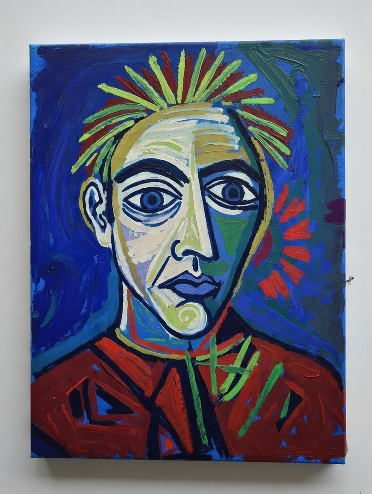
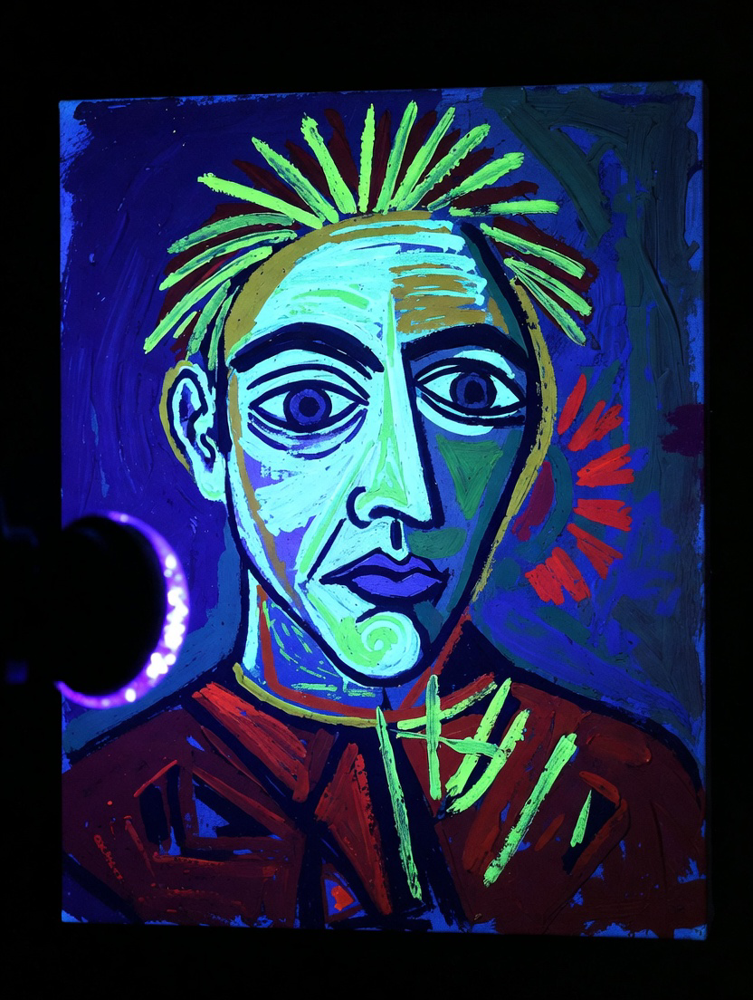
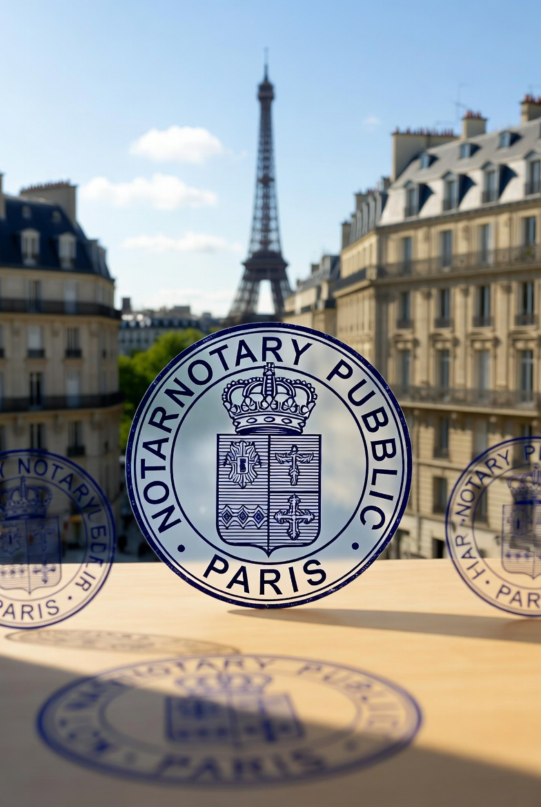

Hypothetical Painting
A ChainRoute provenance example

How a high-value art piece gets a tamper-proof journey from authentication to long-term storage
Important
This is a fictional example. The painting, people, organizations, locations, and documents in this presentation are made up for protocol demonstration only. They do not represent any real artwork, transaction, or entity. ChainRoute is a real protocol; this story is not.
We use a “hypothetical Picasso” worth ~$8–12 million to show how each step in a provenance chain can be anchored and verified.
This example is deployed live on Polygon Mainnet and Arweave. All 38 on-chain transactions (7 Polygon anchors + 31 Arweave uploads) are real and publicly verifiable. See the
Verification Reference Guide for clickable links to every transaction on PolygonScan and Arweave, plus step-by-step instructions to walk the chain yourself.
What is ChainRoute?
ChainRoute is a lightweight provenance protocol that:
- Stores event data permanently on Arweave
- Anchors each step with a tiny transaction on Polygon
- Uses a single "genesis" transaction to tie the whole chain together
No smart contracts, no custom tokens—just 127-byte Polygon payloads and verifiable links to Arweave.
The journey (6 stages)
Paris → New York → London
- 1. Authentication — Paris: expert certification
- 2. Secure transport — Paris to New York
- 3. Auction drop-off — Manhattan auction house
- 4. Live bidding — Sale at $12 million
- 5. Secure handover — To buyer’s vault in London
- 6. Long-term storage — Climate-controlled vault
Each stage produces a provenance “event” plus supporting files (photos, reports, receipts). All are recorded in the chain.
Before the journey: Genesis
The estate (Fondation Hypothétique) creates the chain with a single Polygon transaction: no Arweave blob yet, just “this chain exists.” That transaction’s hash becomes the genesis hash—the root every later event will reference.
Signer (fictional): Sébastien Moreau — Director, Fondation Hypothétique (artist’s estate). Authorized to create the provenance chain on behalf of the estate.
Stage 1: Authentication (Paris)
Galerie Lumière, Rue de Rivoli. Expert certification: authentic pigments, no modern dyes. Digital certificate issued.
Date: Feb 14, 2026 · GPS: 48.860294 N, 2.338629 E
Expert: Dr. Elise Moreau · Provenance: Last owned by Swiss collector in 1982
Transaction: Digital certificate issued for €50,000
Supporting files: UV_Analysis_Picasso_Hypothetical.png, Spectral_Analysis_Report_v1.pdf, Notary_Seal_Paris.png, ArtSecure_Cert_12345.pdf, Fictional_Picasso.png
Signer (fictional): Dr. Elena Vasquez — Chief Authenticator, ArtSecure Paris.

Fictional supporting images (placeholders)
Stage 1 continued: The Notary Seal
After Dr. Vasquez completed the spectral and UV analysis, the results were notarized in Paris by an official notary public. The seal below confirms the authentication documents are legally binding under French law.
Document: Notary Seal Paris
Purpose: Legal attestation of authentication findings
Filed by: Dr. Elena Vasquez, ArtSecure Paris
Anchored on Arweave: Referenced in the Stage 1 event blob alongside the spectral report and UV analysis
The notary seal, authentication certificate, and analysis reports are all listed in the Arweave event blob for Stage 1.

Official notary seal (fictional)
Stage 2: Secure transport (Paris → New York)

Pre-shipment crate (fictional)
Secure crate via Air France AF034. $8M insurance, customs cleared at JFK. Tracking and manifests recorded.
Date: Feb 20, 2026 · Method: Air France AF034
Insurance: $8M · Tracking: TRK-789012 · Customs: $10,000 cleared at JFK
Departure: 48.860294 N, 2.338629 E → Arrival: 40.641766 N, -73.780968 W
Supporting files: Crate_Photo_Paris.png, Flight_Manifest_AF034.pdf, Insurance_Policy_8M.pdf, Customs_Clearance_JFK.png
Signer (fictional): Marcus Webb — Head of Security, Palladium Art Logistics.
Stage 2 continued: Customs Clearance at JFK

JFK customs clearance (fictional)
Upon arrival at JFK, the crate passed through U.S. customs with a $10,000 import duty cleared. The customs document confirms the artwork's declared value, origin, and insurance coverage.
Document: Customs Clearance JFK
Flight: Air France AF034, Paris → JFK
Declared value: $8–12M (insured at $8M)
Tracking: TRK-789012 — tilt/shock indicators green throughout
Customs clearance, flight manifest, and insurance policy are all referenced in the Stage 2 Arweave blob.
Stage 3: Auction drop-off (Manhattan)
Arrival at auction house. Condition check, secure viewing room. Value estimate $8–12M.
Date: Feb 25, 2026 · GPS: 40.758896 N, -73.978692 W
Location: 123 Rockefeller Plaza · Staff: Curator John Hale · Value estimate: $8–12M
Supporting files: DropOff_Photo_Manhattan.png, Condition_Report_NY.pdf, Receipt_AuctionHouse.pdf, Security_Log_Entry.txt
14:12:45 - Door unlock by John Hale (Curator). 14:18:30 - Crate placed, photography initiated. 14:27:45 - Artwork removed, visual check: no new damage. 14:48:10 - Approved for storage preview, cabinet #VC-12.
Signer (fictional): Victoria Chen — Registrar, Christie's New York.
Stage 3 continued: Security Log
The auction house recorded every moment from crate arrival to secure storage. This minute-by-minute security log is one of the supporting files anchored on Arweave.
Document: Security_Log_Entry.txt
Location: 123 Rockefeller Plaza, Manhattan
Logged by: Security Supervisor Maria Torres
Verified by: Curator John Hale
14:12:45 - Door unlock by John Hale (Badge #JH-047)
Biometric: Fingerprint + PIN confirmed
14:15:02 - Entry: Hale + 2 security + armored courier
Crate seals intact, tilt/shock: Green
14:18:30 - Crate on padded table; photography initiated
CCTV cameras 3, 4, 7 recording
14:22:10 - Crate opening; foam wrapping intact
14:27:45 - Artwork removed by gloved personnel
Visual check: No new abrasions or damage
14:35:20 - UV exam + raking light: Stable surface
14:48:10 - Approved; returned to cabinet #VC-12
14:50:55 - Receipt signed, scanned, emailed
15:02:30 - All personnel exited; door secured
Electronic lock engaged, alarm armed
Stage 4: Live bidding (sale)
Live auction with online bids. Final sale: $12 million to anonymous buyer. Wire transfer confirmed, 150 attendees, notarized.
Date: Mar 1, 2026 · GPS: 40.758896 N, -73.978692 W
Event: Live auction with online bids · Transaction: Wire transfer confirmed · Witnesses: 150 attendees, notarized
Supporting files: Bidding_Event_Photo.png, Sale_Transcript.pdf, Transaction_Receipt_12M.pdf, Buyer_Agreement_Redacted.pdf
Signer (fictional): James Okonkwo — Buyer’s legal counsel; signs on behalf of the winning bidder.
Stage 4 continued: The $12M Transaction
The auction concluded with a record $12 million sale. Three key documents were generated and anchored on Arweave as supporting files for this stage:
- Sale Transcript — Full record of the bidding, from opening at $6M through 23 bids to the final hammer at $12M
- Transaction Receipt — Wire transfer confirmation from buyer’s bank; $12M settled within 48 hours
- Buyer Agreement (Redacted) — Terms of sale, insurance transfer, and storage obligations; buyer identity redacted for privacy
Auction Summary
Opening bid: $6,000,000
Total bids: 23 (in-room + online)
Final hammer: $12,000,000
Buyer: Anonymous (legal counsel: James Okonkwo)
Payment: Wire transfer, confirmed within 48h
Witnesses: 150 attendees + notary public
All three documents are listed in the Arweave event blob for Stage 4.
Stage 5: Secure handover (to London)
Armored transport, private jet. Signed handover to buyer’s vault. Condition verified. Insurance continued at $12M.
Date: Mar 5, 2026 · GPS: 51.517500 N, -0.109722 W
Method: Armored transport via private jet · Insurance: $12M post-sale · Condition verified intact
Supporting files: Handover_Photo_London.png, Transfer_Documents.pdf, Jet_Manifest.pdf, Vault_Entry_Log.txt
20:57:40 - Handover ceremony; Transfer_Documents.pdf signed (Transferor, Transferee, Witness, Notary). 21:12:50 - Artwork in compartment #VC-LON-047; 20.0°C / 50% RH.
Signer (fictional): Marcus Webb — Palladium Art Logistics (handover leg).
Stage 5 continued: London Vault Intake
The formal vault intake ceremony in London was recorded in meticulous detail. Every step—from armored van arrival to compartment lock—is logged and anchored on Arweave.
Document: Vault_Entry_Log.txt
Vault: London Private Vault Services, compartment #VC-LON-047
Logged by: Vault Supervisor Thomas Reid
Verified by: Senior Security Officer Laura Bennett
20:45:12 - Armored transport arrival confirmed
4 escorts, crate seals verified intact
20:48:30 - Vault bay unlock: Biometric + secondary auth
CCTV cameras 1–6, 12 recording
20:52:15 - Crate to inspection station
Tilt/shock: Green; Temp: 19.8–20.4°C
20:57:40 - Handover ceremony completed
Transfer docs signed: 4 parties + notary
21:05:22 - Crate opened under dual supervision
Artwork inspected: No damage, pigments stable
21:12:50 - Placed in compartment #VC-LON-047
Locked: Biometric + dual mechanical key
Env: 20.0°C / 50% RH / 0 lux (dark storage)
21:18:10 - RFID tag #RF-2026-03-047 scanned
21:25:00 - All personnel exited; alarm armed
Stage 6: Long-term storage (London vault)

Vault (fictional)
Climate-controlled vault: 20°C, 50% humidity, 24/7 monitoring. Restricted access, biometric logs. Insured at $12M.
Location: Central London, compartment #VC-LON-047 · GPS: 51.517500 N, -0.109722 W
Conditions: 20°C, 50% RH · Access: Biometric + PIN + dual-key · Maintenance: Annual inspections
Supporting files: Storage_Photo_Vault.png, Climate_Control_Report.pdf, Access_Log_Initial.txt, Insurance_Update_PostSale.pdf
Initial period: 5 authorized accesses (placement, environmental check, monthly inspection, provenance audit, conservator spot-check). Unauthorized attempts: 0. Environmental deviations: 0.
Signer (fictional): Dame Eleanor Ashford — Director, Sterling Vaults London.
Stage 6 continued: Ongoing Security Monitoring
After intake, the vault maintains an ultra-restricted access log. Over the first four months, only five authorized accesses occurred—each biometrically verified and recorded.
Document: Access_Log_Initial.txt
Period: March–June 2026
Total accesses: 5 (all authorized)
Unauthorized attempts: 0
Environmental deviations: 0
Mar 6 09:15 - Post-intake verification
Thomas Reid; fingerprint + facial + PIN
Duration: 4 min 18 sec
Mar 6 14:30 - Environmental calibration check
Emma Clarke + supervisor override
Temp: 20.0°C, RH: 50.1% — nominal
Apr 5 10:00 - Monthly routine inspection
Reid + Bennett; dual biometric
No anomalies; artwork stable
May 3 11:20 - Quarterly provenance audit
Digital photo for annual report
Jun 7 09:45 - Annual maintenance preview
External conservator Dr. Grant (escorted)
UV spot-check: Pigments and canvas stable
No conservation required
Next access: September 2026 (quarterly check)
How it’s anchored
Each stage has:
- Arweave — Event summary + list of support file IDs (permanent storage)
- Polygon — One small transaction (127 bytes) linking genesis hash, previous step, this event’s Arweave ID, and the next “delegate” signer
Genesis→Event 1→Event 2→…→Event 6
Verifiers can start from any Polygon tx or Arweave file, extract the genesis hash, and walk the chain.
Polygon payload (127 bytes)
Each step is anchored with a 127-byte payload. Layout:
| Offset | Field | Size | Notes |
|---|
| 0–31 | genesisHash | 32 | 64 hex chars |
| 32–63 | previousPolygonHash | 32 | 64 hex (zeros for genesis & event 1) |
| 64–106 | arweaveId | 43 | 43-char Arweave tx ID (or zeros for genesis) |
| 107–126 | delegate | 20 | 0x + 40 hex (Ethereum-style address) |
Payload JSONs in this folder: genesis-payload.json, 1-authentication-payload.json … 6-long-term-storage-payload.json. Build with build-polygon-payload.js; verify with verify-chain.js and chain-manifest.json.
Who signed? (all fictional)
Each Polygon transaction is signed by a “delegate.” In this example:
- Genesis — Sébastien Moreau Director, Fondation Hypothétique
- Event 1 — Dr. Elena Vasquez Chief Authenticator, ArtSecure Paris
- Event 2 & 5 — Marcus Webb Head of Security, Palladium Art Logistics
- Event 3 — Victoria Chen Registrar, Christie's New York
- Event 4 — James Okonkwo Buyer’s legal counsel
- Event 6 — Dame Eleanor Ashford Director, Sterling Vaults London
Signer identities may be kept private or shared only with regulators/auditors; the chain itself is public. Full signer details (role, address, contact) are in PolygonEventSigners.json.
Thank you
Hypothetical Painting — fictional example for ChainRoute
All names, entities, and events in this deck are fictitious.